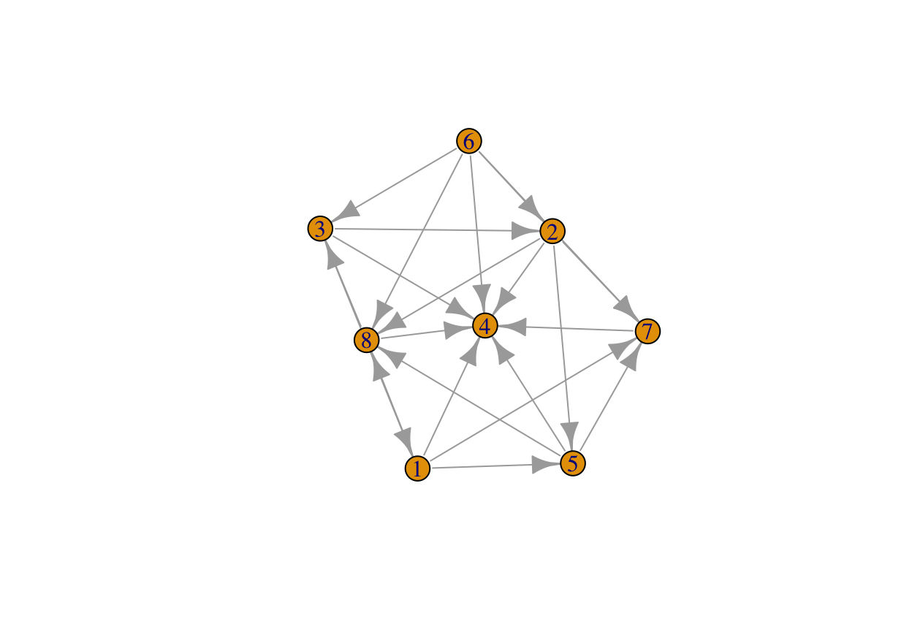
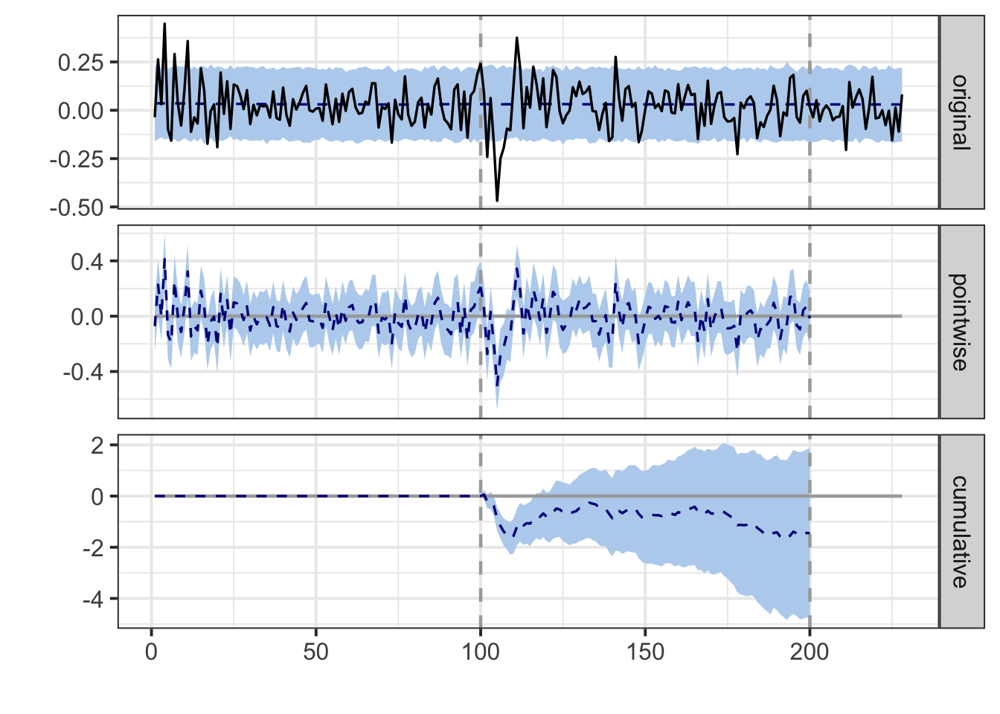
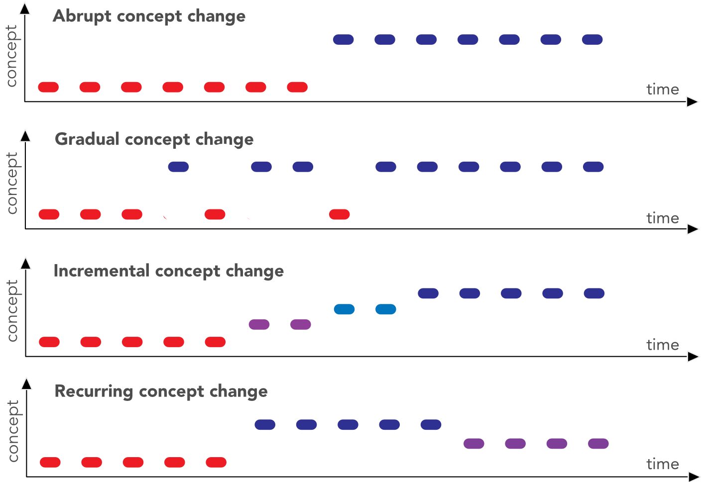
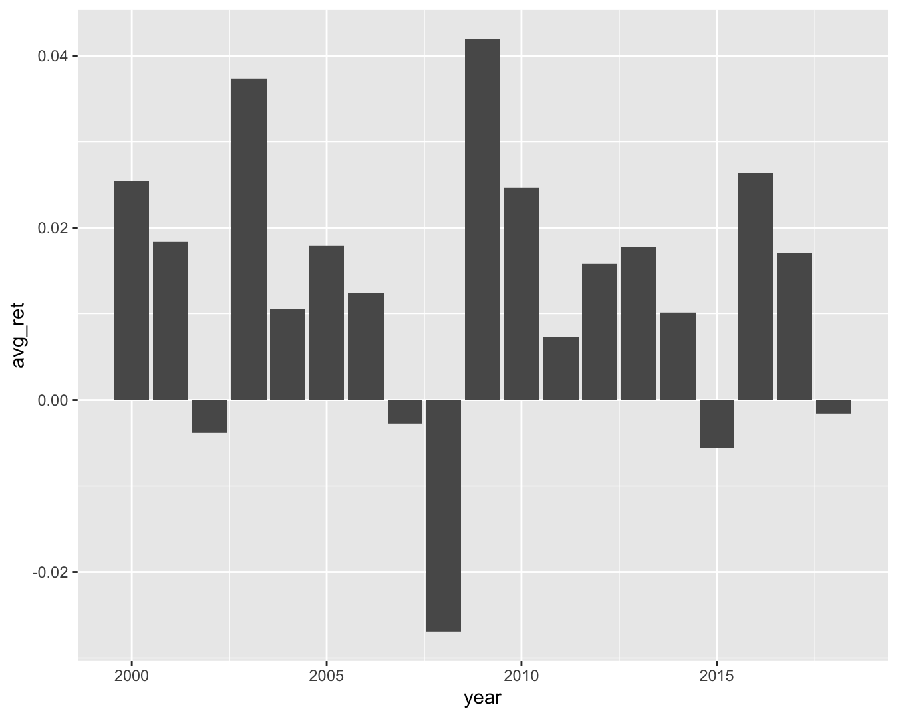
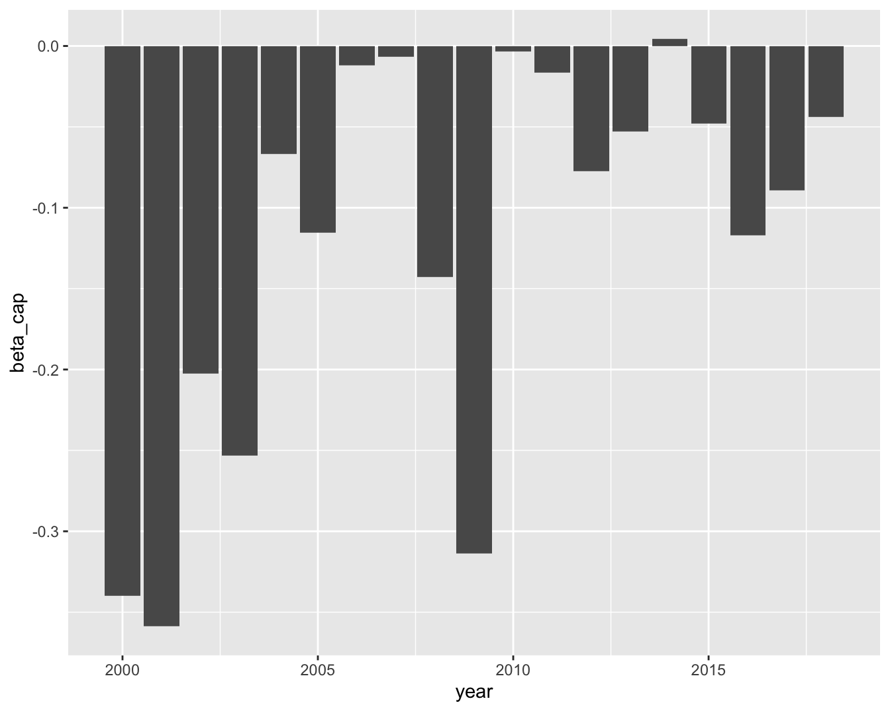

14 两个关键概念：因果性和非平稳性
ML工具面临的一个突出批评是它们无法揭示特征和标签之间的 因果性 关系，因为它们主要（根据设计）专注于捕获相关性。相关性比因果性弱得多，因为它们表征双向关系 (\(\textbf{X}\leftrightarrow \textbf{y}\))，而因果性指定方向 \(\textbf{X}\rightarrow \textbf{y}\) 或 \(\textbf{X}\leftarrow \textbf{y}\)。一个流行的例子是情绪。许多学术文章似乎发现情绪（无论其定义如何）是未来收益率的重要驱动因素。对特定股票的高情绪可能会增加对该股票的需求并推高其价格（尽管反向推理也可能适用：如果情绪高，则表明均值回归可能即将发生）。反向因果性也是合理的：收益率很可能会影响情绪。如果一只股票经历了长期的市场上涨，人们就会看好这只股票，情绪也会增加（这主要来自外推，参见 Barberis et al. (2015) 的理论模型）。在 Coqueret (2020) 中，发现（与该领域的大多数发现相反）后一种关系（收益率 \(\rightarrow\) 情绪）更有可能。该结果得到格兰杰因果性检验的支持（参见 14.1.1 节）。
统计因果性是一个很大的领域，我们参考 Pearl (2009) 深入探讨这个主题。最近，研究人员试图将因果性与ML方法联系起来（例如，参见 Peters, Janzing, and Schölkopf (2017)、Heinze-Deml, Peters, and Meinshausen (2018)、Arjovsky et al. (2019)）。他们工作中的关键概念是 不变性。
通常，数据不是一次性收集的，而是在不同时刻从不同来源收集的。在这些不同来源中发现的一些关系将会改变，而其他关系可能保持不变。对于 不断变化的环境 不变的关系可能源于（并表明）因果性。一个反例如下（在 Beery, Van Horn, and Perona (2018) 中相关）：训练计算机视觉算法来区分牛和骆驼将导致算法专注于草与沙子！这是因为大多数骆驼都是在沙漠中拍摄的，而牛则在绿色的草地上拍摄。因此，草地上的骆驼的图片将被归类为牛，而沙子上的牛的图片将被标记为“骆驼”。只有通过这两种动物在不同背景（环境）下的图片，学习者才能最终真正找到牛和骆驼的构成。无论在哪里描绘骆驼，它仍然是骆驼：学习者应该认出它是骆驼。如果是这样，骆驼的表示在所有数据集中都保持不变，并且学习者已经发现了因果性，即使骆驼成为骆驼的真实属性（整体轮廓、背部形状、面部、颜色（可能误导！）等）。
这种对不变性的追求对于计算机视觉或Python notebooks等许多学科来说都是有意义的（猫总是看起来像猫，语言也不会发生太大变化）。在金融领域，不变性的存在并不明显。众所周知，市场条件是随时间变化的，公司特征和收益率之间的关系也逐年变化。此问题的一种解决方案可能就是采用 非平稳性（有关平稳性的定义，请参阅 1.1 节）。在第12章中，我们主张通过滚动训练集尽可能频繁地更新模型来做到这一点：这使得预测能够基于最新的趋势。在下面的 14.2 节中，我们介绍其他理论和实践选项。
14.1 因果性
传统的ML模型旨在揭示变量之间的关系，但通常不会为这些关系指定 方向 。一个典型的例子是线性回归。如果我们写 \(y=a+bx+\epsilon\)，那么 \(x=b^{-1}(y-a-\epsilon)\) 也成立，这当然也是线性关系（相对于 \(y\)）。这些方程没有定义 \(x\) 是 \(y\) 的明确决定因素的因果性（\(x \rightarrow y\)，但相反的情况可能是错误的）。
最近，D’Acunto et al. (2021) 对主要股票因子的因果结构进行了调查。该研究通过 Hyvärinen et al. (2010) 的 VAR-LiNGAM 技术发现，风险因子的相互作用正在不断演变。
14.1.1 格兰杰因果性
Granger (1969) 首先提出的最著名的工具可能是最简单的。为简单起见，我们仅考虑两个平稳过程：\(X_t\) 和 \(Y_t\)。因果性的严格定义如下。 \(X\) 可以说是导致 \(Y\)，只要对于某个整数 \(k\)， \[(Y_{t+1},\dots,Y_{t+k})|(\mathcal{F}_{Y,t}\cup \mathcal{F}_{X,t}) \quad \overset{d}{\neq} \quad (Y_{t+1},\dots,Y_{t+k})|\mathcal{F}_{Y,t},\] 也就是说，当以两个过程的知识为条件的 \(Y_t\) 未来值的分布与仅以过滤 \(\mathcal{F}_{Y,t}\) 知识为基础的分布不同时。因此 \(X\) 确实对 \(Y\) 有影响，因为它的轨迹改变了 \(Y\) 的轨迹。
现在，这个公式太模糊，无法用数值来处理，因此我们通过线性公式来简化设置。我们保留与 Granger (1969) 原始论文第 5 节相同的符号。该测试由两个回归组成： \[\begin{align*} X_t&=\sum_{j=1}^ma_jX_{t-j}+\sum_{j=1}^mb_jY_{t-j} + \epsilon_t \\ Y_t&=\sum_{j=1}^mc_jX_{t-j}+\sum_{j=1}^md_jY_{t-j} + \nu_t \end{align*}\] 为简单起见，假设两个过程均值为零。通常的假设适用：高斯噪声 \(\epsilon_t\) 和 \(\nu_t\) 在所有可能的方面（相互和随时间）不相关。测试如下：如果一个 \(b_j\) 非零，则称 \(Y\) 格兰杰导致 \(X\)，如果一个 \(c_j\) 非零，则称 \(X\) 格兰杰导致 \(Y\)。两者并不相互排斥，并且人们普遍认为反馈循环很可能发生。
统计上，在零假设下，\(b_1=\dots=b_m=0\) (分别 \(c_1=\dots=c_m=0\))，可以使用通常的费歇尔分布进行检验。显然，可以忽略线性限制，但测试会复杂得多。这个方向的主要财经文章是Hiemstra and Jones (1994)。
有许多 R 包嵌入了 Granger 因果性功能。最广泛使用的之一是 lmtest，因此我们在下面使用它。语法非常简单。 order 参数是上式中的最大滞后 \(m\)。我们测试过去 6 个月的平均市值是否会导致一只特定股票（样本中的第一只股票）的 1 个月远期收益率。
library(lmtest)
x_granger <- training_sample %>% # X variable =...
filter(stock_id ==1) %>% # ... stock nb 1
pull(Mkt_Cap_6M_Usd) # ... & Market cap
y_granger <- training_sample %>% # Y variable = ...
filter(stock_id ==1) %>% # ... stock nb 1
pull(R1M_Usd) # ... & 1M return
fit_granger <- grangertest(x_granger, # X variable
y_granger, # Y variable
order = 6, # Maximmum lag
na.action = na.omit) # What to do with missing data
fit_granger## Granger causality test
##
## Model 1: y_granger ~ Lags(y_granger, 1:6) + Lags(x_granger, 1:6)
## Model 2: y_granger ~ Lags(y_granger, 1:6)
## Res.Df Df F Pr(>F)
## 1 149
## 2 155 -6 4.111 0.0007554 ***
## ---
## Signif. codes: 0 '***' 0.001 '**' 0.01 '*' 0.05 '.' 0.1 ' ' 1该测试是定向的，仅测试 \(X\) 是否格兰杰导致 \(Y\)。为了测试反向效果，需要将函数中的参数反转。在上面的输出中，\(p\) 值非常低，因此在 \(H_0\) 成立的条件下观察到类似样本的概率可以忽略不计。因此，市值似乎确实有助于预测一个月收益率。尽管如此，我们还是强调格兰杰因果性可以说比下一小节中定义的因果性弱。一个格兰杰导致另一个过程的过程仅包含有用的预测信息，这并不是严格意义上的因果性证明。此外，我们的测试仅限于线性模型，包含非线性可能会改变结论。最后，包括其他回归量（可能省略变量）也可能改变结果（参见，例如 Chow, Cotsomitis, and Kwan (2002)）。
14.1.2 因果加性模型
因果模型家族包含多种形式（甚至 9.5 部分的 BART 在 Hahn, Murray, and Carvalho (2019) 中也用于此目的）。有兴趣的读者可以查看 Pearl (2009)、Peters, Janzing, and Schölkopf (2017)、Maathuis et al. (2018) 和 Hünermund and Bareinboim (2019) 以及其中的参考文献。因果模型的核心工具之一是 Pearl 开发的 do-calculus。传统概率 \(P[Y|X]\) 将 \(Y\) 的概率有条件地链接到 观察 \(X\) 取某个值 \(x\)，而 do(\(\cdot\)) 强制 \(X\) 取值 \(x\)。这是 观察 与 干预 的二分。下面是一个经典的例子。观察气压计可以了解天气情况，因为高压通常与晴天相关： \[P[\text{sunny weather}|\text{barometer says ``high''} ]>P[\text{sunny weather}|\text{barometer says ``low''} ],\] 但如果你篡改气压计（强制它显示一些值）， \[P[\text{sunny weather}|\text{barometer hacked to ``high''} ]=P[\text{sunny weather}|\text{barometer hacked ``low''} ],\] 因为篡改气压计不会对天气产生影响。简而言之，当气压计受到干预时，\(P[\text{weather}|\text{do(barometer)}]=P[\text{weather}]\)。这是一个与因果性相关的有趣例子。最重要的变量是气压。气压会影响天气和气压计，这种共同作用称为混杂。然而，气压计影响天气的说法可能并不正确。想要深入了解这些概念的读者应该仔细看看 Judea Pearl 的作品。Do-calculus 是一个非常强大的理论框架，但将其应用于任何情况或数据集并不容易（例如，参见书评 Aronow and Sävje (2019)）。
虽然我们没有正式介绍因果推理背后的理论的详尽介绍，但我们希望展示一些实际的实现，因为它们很容易解释。挑选出一种特定类型的模型总是很困难，因此我们选择一种可以用简单的数学工具解释的模型。我们从结构因果模型 (SCM) 的最简单定义开始，遵循 Peters, Janzing, and Schölkopf (2017) 的第 3 章。这些模型背后的想法是在模型中引入一些层次结构（即一些附加结构）。形式上，这给出了 \[\begin{align*} X&=\epsilon_X \\ Y&=f(X,\epsilon_Y), \end{align*}\] 其中 \(\epsilon_X\) 和 \(\epsilon_Y\) 是独立的噪声变量。简单地说，\(X\) 的实现是随机抽取的，然后通过 \(f\) 影响 \(Y\) 的实现。现在，如果观察到的变量数量更大，这个方案可能会更复杂。想象一下第三个变量的出现 \[\begin{align*} X&=\epsilon_X \\ Y&=f(X,\epsilon_Y),\\ Z&=g(Y,\epsilon_Z) \end{align*}\]
在这种情况下，\(X\) 对 \(Y\) 有因果作用，然后 \(Y\) 对 \(Z\) 有因果作用。因此我们有以下联系： \[\begin{array}{ccccccc} X & &&&\\ &\searrow & &&\\ &&Y&\rightarrow&Z. \\ &\nearrow &&\nearrow& \\ \epsilon_Y & &\epsilon_Z \end{array}\]
上面的表示称为图，图论有自己的术语，我们非常简单地总结一下。变量通常称为 顶点（或 节点），箭头称为 边。因为箭头有方向，所以它们被称为 有向 边。当两个顶点通过边连接时，它们被称为 相邻。相邻顶点的序列称为 路径，如果所有边都是箭头，则它是有向的。在有向路径中，第一个顶点是父节点，紧随其后的顶点是子节点。
图可以通过邻接矩阵来概括。邻接矩阵 \(\textbf{A}=A_{ij}\) 是一个由 0 和 1 填充的矩阵。每当有从顶点 \(i\) 到顶点 \(j\) 的边时，\(A_{ij}=1\) 。通常，禁止自循环 (\(X \rightarrow X\))，以便邻接矩阵对角线上有零。如果我们考虑上图的简化版本，例如 \(X \rightarrow Y \rightarrow Z\)，则相应的邻接矩阵为
\[\textbf{A}=\begin{bmatrix} 0 & 1 & 0 \\ 0 & 0 & 1 \\ 0& 0&0 \end{bmatrix}.\]
，其中字母 \(X\)、\(Y\) 和 \(Z\) 自然按字母顺序排序。只有两个箭头：从 \(X\) 到 \(Y\)（第一行第二列）和从 \(Y\) 到 \(Z\)（第二行第三列）。
循环 是一种创建循环的特殊路径类型，即当第一个顶点也是最后一个顶点时。序列 \(X \rightarrow Y \rightarrow Z \rightarrow X\) 是一个循环。从技术上讲，周期会带来问题。为了说明这一点，请考虑简单的序列 \(X \rightarrow Y \rightarrow X\)。这意味着 \(X\) 的实现会导致 \(Y\) 的实现，而 \(Y\) 又会导致 \(X\) 的实现。虽然格兰杰因果性可以被视为允许这种连接，但一般因果模型通常避免循环并与 有向无环图 (DAG) 一起使用。正式的图形操作（可能与 do-calculus 相关）可以通过 因果效应 包 Tikka and Karvanen (2017) 进行计算。还可以使用 dagitty (Textor et al. (2016)) 和 ggdag 包创建和操作有向无环图。
配备了这些工具，我们可以明确模型的非常通用的形式： \[\begin{equation} \tag{14.1} X_j=f_j\left(\textbf{X}_{\text{pa}_D(j)},\epsilon_j \right), \end{equation}\]
，其中噪声变量相互独立。符号 \(\text{pa}_D(j)\) 指的是图结构 \(D\) 内顶点 \(j\) 的父节点集。因此，\(X_j\) 是其所有父项和一些噪声项 \(\epsilon_j\) 的函数。因果加性模型是上述规范的温和简化：
\[\begin{equation} \tag{14.2} X_j=\sum_{k\in \text{pa}_D(j)}f_{j,k}\left(\textbf{X}_{k} \right)+\epsilon_j, \end{equation}\]
，其中每个变量的非线性效应是累积的，因此术语“加性”。请注意，那里没有时间索引。与格兰杰因果性相反，不存在自然顺序。这些模型非常复杂且难以估计。详细信息可以在 Bühlmann et al. (2014) 中找到。幸运的是，作者开发了一个 R 包来确定 DAG \(D\)。
下面，我们构建与一小组预测变量加上 1 个月的远期收益率（在训练样本上）相关的邻接矩阵。本书的原始版本使用 CAM 包，其语法非常简单。 28 下面，我们测试更新的 InvariantCausalPrediction 包。
[[NOTE：本小节的其余部分正在修订中。]]
# library(CAM) # Activate the package
data_caus <- training_sample %>% dplyr::select(c("R1M_Usd", features_short))
# fit_cam <- CAM(data_caus) # The main function
# fit_cam$Adj # Showing the adjacency matrix
library(InvariantCausalPrediction)
ICP(X = training_sample %>% dplyr::select(all_of(features_short)) %>% as.matrix(),
Y = training_sample %>% dplyr::pull("R1M_Usd"),
ExpInd = round(runif(nrow(training_sample))),
alpha = 0.05)##
## accepted empty set
## accepted set of variables
## accepted set of variables 1
## *** 2% complete: tested 2 of 128 sets of variables
## accepted set of variables 2
## accepted set of variables 3
## accepted set of variables 4
## accepted set of variables 5
## accepted set of variables 6
## accepted set of variables 7
## accepted set of variables 1,2
## accepted set of variables 1,3
## accepted set of variables 2,3
## accepted set of variables 1,4
## accepted set of variables 2,4
## accepted set of variables 3,4
## accepted set of variables 1,5
## accepted set of variables 2,5
## accepted set of variables 3,5
## accepted set of variables 4,5
## accepted set of variables 1,6
## accepted set of variables 2,6
## accepted set of variables 3,6
## accepted set of variables 4,6
## accepted set of variables 5,6
## accepted set of variables 1,7
## accepted set of variables 2,7
## accepted set of variables 3,7
## accepted set of variables 4,7
## accepted set of variables 5,7
## accepted set of variables 6,7
## accepted set of variables 1,2,3
## accepted set of variables 1,2,4
## accepted set of variables 1,3,4
## accepted set of variables 2,3,4
## accepted set of variables 1,2,5
## accepted set of variables 1,3,5
## accepted set of variables 2,3,5
## accepted set of variables 1,4,5
## accepted set of variables 2,4,5
## accepted set of variables 3,4,5
## accepted set of variables 1,2,6
## accepted set of variables 1,3,6
## accepted set of variables 2,3,6
## accepted set of variables 1,4,6
## accepted set of variables 2,4,6
## accepted set of variables 3,4,6
## accepted set of variables 1,5,6
## accepted set of variables 2,5,6
## accepted set of variables 3,5,6
## accepted set of variables 4,5,6
## accepted set of variables 1,2,7
## accepted set of variables 1,3,7
## accepted set of variables 2,3,7
## accepted set of variables 1,4,7
## accepted set of variables 2,4,7
## accepted set of variables 3,4,7
## accepted set of variables 1,5,7
## accepted set of variables 2,5,7
## accepted set of variables 3,5,7
## accepted set of variables 4,5,7
## accepted set of variables 1,6,7
## accepted set of variables 2,6,7
## accepted set of variables 3,6,7
## accepted set of variables 4,6,7
## accepted set of variables 5,6,7
## accepted set of variables 1,2,3,4
## accepted set of variables 1,2,3,5
## accepted set of variables 1,2,4,5
## accepted set of variables 1,3,4,5
## accepted set of variables 2,3,4,5
## accepted set of variables 1,2,3,6
## accepted set of variables 1,2,4,6
## accepted set of variables 1,3,4,6
## accepted set of variables 2,3,4,6
## accepted set of variables 1,2,5,6
## accepted set of variables 1,3,5,6
## accepted set of variables 2,3,5,6
## accepted set of variables 1,4,5,6
## accepted set of variables 2,4,5,6
## accepted set of variables 3,4,5,6
## accepted set of variables 1,2,3,7
## accepted set of variables 1,2,4,7
## accepted set of variables 1,3,4,7
## accepted set of variables 2,3,4,7
## accepted set of variables 1,2,5,7
## accepted set of variables 1,3,5,7
## accepted set of variables 2,3,5,7
## accepted set of variables 1,4,5,7
## accepted set of variables 2,4,5,7
## accepted set of variables 3,4,5,7
## accepted set of variables 1,2,6,7
## accepted set of variables 1,3,6,7
## accepted set of variables 2,3,6,7
## accepted set of variables 1,4,6,7
## accepted set of variables 2,4,6,7
## accepted set of variables 3,4,6,7
## accepted set of variables 1,5,6,7
## accepted set of variables 2,5,6,7
## accepted set of variables 3,5,6,7
## accepted set of variables 4,5,6,7
## accepted set of variables 1,2,3,4,5
## accepted set of variables 1,2,3,4,6
## accepted set of variables 1,2,3,5,6
## accepted set of variables 1,2,4,5,6
## accepted set of variables 1,3,4,5,6
## accepted set of variables 2,3,4,5,6
## accepted set of variables 1,2,3,4,7
## accepted set of variables 1,2,3,5,7
## accepted set of variables 1,2,4,5,7
## accepted set of variables 1,3,4,5,7
## accepted set of variables 2,3,4,5,7
## accepted set of variables 1,2,3,6,7
## accepted set of variables 1,2,4,6,7
## accepted set of variables 1,3,4,6,7
## accepted set of variables 2,3,4,6,7
## accepted set of variables 1,2,5,6,7
## accepted set of variables 1,3,5,6,7
## accepted set of variables 2,3,5,6,7
## accepted set of variables 1,4,5,6,7
## accepted set of variables 2,4,5,6,7
## accepted set of variables 3,4,5,6,7
## accepted set of variables 1,2,3,4,5,6
## accepted set of variables 1,2,3,4,5,7
## accepted set of variables 1,2,3,4,6,7
## accepted set of variables 1,2,3,5,6,7
## accepted set of variables 1,2,4,5,6,7
## accepted set of variables 1,3,4,5,6,7
## accepted set of variables 2,3,4,5,6,7
## accepted set of variables 1,2,3,4,5,6,7##
## Invariant Linear Causal Regression at level 0.05 (including multiplicity correction for the number of variables)
##
## LOWER BOUND UPPER BOUND MAXIMIN EFFECT P-VALUE
## Div_Yld -0.01 0.01 0.00 0.35
## Eps -0.02 0.00 0.00 0.35
## Mkt_Cap_12M_Usd -0.04 0.00 0.00 0.34
## Mom_11M_Usd -0.02 0.00 0.00 0.34
## Ocf -0.02 0.03 0.00 0.34
## Pb -0.02 0.00 0.00 0.35
## Vol1Y_Usd 0.00 0.02 0.00 0.35矩阵不太稀疏，这意味着模型揭示了样本内变量之间的许多关系。遗憾的是，没有一个方向是我们所寻求的预测任务感兴趣的。事实上，第一个变量是我们想要预测的变量，它的列是空的。然而，它的行已满，这表明相反的效果：未来收益率会引起预测变量值变化，考虑到特征的性质，这可能看起来相当违反直觉。
为了完整起见，我们还提供了 pcalg 包的实现(Kalisch et al. (2012)).29 下面，通过所谓的 PC（以其作者 Peter Spirtes 和 Clark Glymour 命名）进行估计。该算法的细节超出了本书的范围，有兴趣的读者可以查看 Spirtes et al. (2000) 的第 5.4 节或 Kalisch et al. (2012) 的第 2 节，以获取有关该主题的更多信息。我们使用 https://www.bioconductor.org/packages/release/bioc/html/Rgraphviz.html 上提供的 Rgraphviz 包。
library(pcalg) # Load packages
library(Rgraphviz)
est_caus <- list(C = cor(data_caus), n = nrow(data_caus)) # Compute correlations
pc.fit <- pc(est_caus, indepTest = gaussCItest, # Estimate model
p = ncol(data_caus),alpha = 0.01)
iplotPC(pc.fit) # Plot model
图 14.1：有向图的表示。
当模型无法确定边缘方向时，会显示双向箭头。虽然邻接矩阵与第一个模型不同，但仍然没有似乎对因变量（第一个圆圈）有明显因果影响的预测变量。
14.1.3 结构时间序列模型
我们通过提及一种特定类型的结构模型来结束因果性主题：结构时间序列。因为我们说明它们与特定类型的因果推理的相关性，所以我们严格遵循 Brodersen et al. (2015) 的符号。该模型由两个方程驱动：
\[\begin{align*} y_t&=\textbf{Z}_t'\boldsymbol{\alpha}_t+\epsilon_t \\ \boldsymbol{\alpha}_{t+1}& =\textbf{T}_t\boldsymbol{\alpha}_{t}+\textbf{R}_t\boldsymbol{\eta}_t. \end{align*}\]
因变量表示为状态变量 \(\boldsymbol{\alpha}_t\) 加上误差项的线性函数。这些变量又是其过去值的线性函数加上另一个可能具有复杂结构的误差项（它是矩阵 \(\textbf{R}_t\) 与中心高斯项 \(\boldsymbol{\eta}_t\) 的乘积）。该规范将许多模型嵌套为特殊情况，例如 ARIMA。
Brodersen et al. (2015) 的目标是通过制度变化检测因果影响。他们在给定的训练期间估计上述模型，然后预测模型在某些测试集上的响应。如果实现值与预测值之间的总（求和/积分）误差很大（基于某些统计测试），那么作者得出结论认为断点是相关的。最初，该方法的目的是通过观察干预前训练的模型在干预后的行为如何来量化干预的效果。
下面，我们测试样本中的 100\(^{th}\) 日期点（2008 年 4 月）是否是一个转折点。可以说，这个日期属于次贷金融危机的时间跨度。我们使用 因果影响 包，它使用 bsts 库（贝叶斯结构时间序列）。
library(CausalImpact)
stock1_data <- data_ml %>% filter(stock_id == 1) # Data of first stock
struct_data <- data.frame(y = stock1_data$R1M_Usd) %>% # Combine label...
cbind(stock1_data %>% dplyr::select(features_short)) # ... and features
pre.period <- c(1,100) # Pre-break period (pre-2008)
post.period <- c(101,200) # Post-break period
impact <- CausalImpact(zoo(struct_data), pre.period, post.period)
summary(impact)## Posterior inference {CausalImpact}
##
## Average Cumulative
## Actual 0.016 1.638
## Prediction (s.d.) 0.03 (0.017) 3.05 (1.734)
## 95% CI [-0.0037, 0.065] [-0.3720, 6.518]
##
## Absolute effect (s.d.) -0.014 (0.017) -1.410 (1.734)
## 95% CI [-0.049, 0.02] [-4.880, 2.01]
##
## Relative effect (s.d.) -46% (57%) -46% (57%)
## 95% CI [-160%, 66%] [-160%, 66%]
##
## Posterior tail-area probability p: 0.186
## Posterior prob. of a causal effect: 81%
##
## For more details, type: summary(impact, "report")
#summary(impact, "report") # Get the full report (see below)与模型相关的时间序列如图 14.2 所示。
plot(impact)
图 14.2：因果影响研究的输出。
下面，我们复制并粘贴该函数生成的报告（通过上述代码中的注释行获得）。结论并不支持危机对模型产生显着影响，这可能是因为后期误差的迹象不断变化。
在干预后期间，响应变量的平均值约为。 0.016。如果没有干预，我们预计平均响应为 0.031。该反事实预测的 95% 区间为 [-0.0059, 0.063]。从观察到的响应中减去该预测，即可得出干预对响应变量的因果影响的估计。此效果为 -0.015，95% 区间为 [-0.047, 0.022]。
总结干预后期间的各个数据点（有时只能进行有意义的解释），响应变量的总体值为 1.64。如果没有进行干预，我们预计总和为 3.09。该预测的 95% 区间为 [-0.59, 6.34]。上述结果以绝对数字形式给出。相对而言，响应变量下降了-47%。该百分比的 95% 区间为 [-152%, +72%]。
这意味着，虽然在考虑整个干预期时，干预似乎对响应变量产生了负面影响，但这种影响在统计上并不显着，因此无法进行有意义的解释。明显的效果可能是与干预无关的随机波动的结果。当干预期很长并且大部分时间效果已经消失时，通常会出现这种情况。当干预时间太短而无法区分信号和噪声时，也可能出现这种情况。最后，当没有足够的控制变量或这些变量在学习期间与响应变量没有很好地相关时，可能会出现无法找到显着效果的情况。
偶然获得此效果的概率为 p = 0.199。这意味着该效应可能是虚假的，并且通常不会被认为具有统计显着性。
14.2 应对不断变化的环境
ML贡献中最常见的假设是所研究的样本是独立同分布的。我们试图描述的是现象的实现。这个约束是很自然的，因为如果 \(X\) 和 \(y\) 之间的关系总是变化，那么就很难从观察中推断出任何东西。金融领域的一个主要问题是，这种情况经常发生：市场、行为、策略等一直在发展。这至少部分与不存在套利的概念有关：如果一种交易策略一直有效，所有市场参与者最终都会通过羊群效应采用它，这将消除相应的收益。30如果该策略保持私有，其持有者将变得无限富有，这显然从未发生过。
有多种方法可以定义环境中的更改。如果我们用 \(\mathbb{P}_{XY}\) 表示所有变量（特征和标签）的多元分布，用 \(\mathbb{P}_{XY}=\mathbb{P}_{X}\mathbb{P}_{Y|X}\) 表示，则可以进行两个简单的更改：
- 协变量移位：\(\mathbb{P}_{X}\) 发生变化，但 \(\mathbb{P}_{Y|X}\) 不变：特征分布波动，但与 \(Y\) 的关系保持不变；
- 概念漂移：\(\mathbb{P}_{Y|X}\) 发生变化，但 \(\mathbb{P}_{X}\) 没有变化：特征分布稳定，但它们与 \(Y\) 的关系发生了变化。
显然，我们忽略了两项都发生变化的情况，因为它太复杂而难以处理。在因子投资中，特征工程过程（参见4.4节）部分设计是为了绕过协变量转移的风险。均匀化保证边际保持不变，但特征之间的相关性当然可能会改变。当特征解释标签的方式随时间变化时，主要问题可能是概念漂移。在 Cornuejols, Miclet, and Barra (2018)、31 中，作者区分了四种类型的漂移，我们在图 14.3 中重现了它们。在因子模型中，变化可能是所有四种类型的组合：它们在市场崩盘期间可能是突然的，但大多数时候它们是渐进的并且永无止境（不断重复）。

图 14.3：不同风格的概念变化。
当然，如果我们知道环境发生变化，相应地（即动态地）调整模型似乎是合乎逻辑的。这就产生了所谓的 稳定性-可塑性困境。这种困境是模型 反应性 （新实例对更新有重要影响）与 稳定性 （这些实例可能不代表较慢的趋势，因此它们可能使模型向次优方向移动）之间的权衡。
实际上，有两种方法可以解决这种困境：改变训练样本的时间顺序深度（例如，回溯到更早的时间），或者在可能的情况下，为最近的实例分配更多权重。我们在 12.1 节中讨论第一个选项，在 6.3 节中提到第二个选项（尽管 Adaboost 的目的正是让算法处理权重）。在神经网络中，一般来说，在损失函数的计算中引入基于实例的权重是可能的，尽管这个选项在 Keras 中尚不可用（据我们所知：该框架发展迅速）。对于简单回归，这个想法被称为 加权最小二乘法，其中误差在损失内加权： \[L=\sum_{i=1}^Iw_i(y_i-\textbf{x}_i\textbf{b})^2.\] 用矩阵术语来说，就是 \(L=(\textbf{y}-\textbf{Xb})'\textbf{W}(\textbf{y}-\textbf{Xb})\)，其中 \(\textbf{W}\) 是权重的对角矩阵。相对于 \(\textbf{b}\) 的梯度等于 \(2\textbf{X}'\textbf{WX}\textbf{b}-2\textbf{X}'\textbf{Wy}\)，使得 \(\textbf{b}^*=(\textbf{X}'\textbf{WX})^{-1}\textbf{X}'\textbf{Wy}\) 的损失最小化。恢复 \(\textbf{W}=\textbf{I}\) 的标准最小二乘解。为了微调模型的反应性，权重必须是一个随着样本中实例变旧而减小的函数。
对于不断变化的金融环境当然没有完美的解决方案。下面，我们提到ML文献中为克服数据生成过程中的非平稳性问题而采取的两条路线。但首先，我们提出另一个明确的验证，即市场确实经历了随时间变化的分布。
14.2.1 非平稳性：另一个例子
（金融）计量经济学最基本的实践之一是研究收益率（相对价格变化）。原因很简单，随着时间的推移，收益率似乎表现一致（每月收益率是有限的，它们通常位于 -1 和 +1 之间）。另一方面，价格会发生变化，而且通常有些价格永远不会回到过去的价值。这使得价格更难研究。
平稳性是金融计量经济学中的一个关键概念：用随时间保持不变的分布属性来描述现象要容易得多（这使得它们可以被捕获）。遗憾的是，收益率的分布并不是固定的：收益率的均值和方差都随着周期而变化。
下面，在图 14.4 中，我们通过计算整个数据集中所有日历年的平均月收益率来说明这一事实。
data_ml %>%
mutate(year = year(date)) %>% # Create a year variable
group_by(year) %>% # Group by year
summarize(avg_ret = mean(R1M_Usd)) %>% # Compute average return
ggplot(aes(x = year, y = avg_ret)) + geom_col() + theme_grey()
图 14.4：每年的平均月收益率。
均值的这些变化还伴随着二阶矩的变化（方差/波动性）。这种被称为波动性聚类的效应自从 Engle (1982) 的理论突破（甚至更早）以来就已被广泛记录。例如，我们参考 Cont (2007) 了解有关此主题的更多详细信息。对于 R 中已实现波动率的计算，我们强烈推荐 Regenstein (2018) 中的第 4 章。
在ML模型方面，也是如此。下面，我们使用一个预测变量来估计纯特征回归，即过去 6 个月的平均市值 (\(r_{t+1,n}=\alpha+\beta x_{t,n}^{\text{cap}}+\epsilon_{t+1,n}\))。标签是 6 个月远期收益率，并且在每个日历年进行估计。
data_ml %>%
mutate(year = year(date)) %>% # Create a year variable
group_by(year) %>% # Group by year
summarize(beta_cap = lm(R6M_Usd ~ Mkt_Cap_6M_Usd) %>% # Perform regression
coef() %>% # Extract coefs
t() %>% # Transpose
data.frame() %>% # Format into df
pull(Mkt_Cap_6M_Usd)) %>% # Pull coef (remove intercept)
ggplot(aes(x = year, y = beta_cap)) + geom_col() + # Plot
theme_grey()
图 14.5：贝塔值相对于 6 个月市值的变化。
图 14.5 中的条形突出了概念漂移：总体而言，市值和收益率之间的关系是负的（再次是 规模效应）。有时它是明显负面的，有时则不是那么明显。市值解释收益率的能力是随时间变化的，模型必须相应地适应。
14.2.2 在线学习
在线学习是指ML的一个子集，其中新信息逐渐到达，并且该流程的集成是迭代执行的（术语“在线”未链接到互联网）。为了考虑到最新的数据更新，必须更新模型（这是显而易见的）。金融领域显然就是这种情况，这个主题与12.1节中关于学习窗口的讨论密切相关。
问题是，如果使用 2010 年至 2019 年的数据训练 2019 年模型，则（动态）2020 年模型将必须使用包括 2020 年最新点在内的整个数据集重新训练。这可能很繁重，并且在学习过程中仅包含最新点将大大降低其计算成本。在神经网络中，权重的连续批量更新可以允许模型逐步变化。尽管如此，这对于决策树来说通常是不可能的，因为分割是一劳永逸地决定的。一个值得注意的例外是 Basak (2004)，但是，在这种情况下，树的构造与原始算法有很大不同。
在线学习最简单的例子是 Widrow-Hodd 算法（最初来自 Widrow and Hoff (1960)）。最初，这个想法来自所谓的 ADALINE（ADAptive LInear NEuron）模型，它是一种具有一个隐藏层和线性激活函数的神经网络（即，像感知器，但具有不同的激活）。
假设模型是线性的，即 \(\textbf{y}=\textbf{Xb}+\textbf{e}\) （可以将常量添加到预测变量列表中），并且数据量很大且输入频率很高，因此禁止在完整样本上更新模型，因为这在技术上很困难。更新 \(\textbf{b}\) 值的一种简单且启发式的方法是计算 \[\textbf{b}_{t+1} \longleftarrow \textbf{b}_t-\eta (\textbf{x}_t\textbf{b}-y_t)\textbf{x}_t',\] 其中 \(\textbf{x}_t\) 是实例 \(t\) 的行向量。理由很简单。二次误差 \((\textbf{x}_t\textbf{b}-y_t)^2\) 相对于 \(\textbf{b}\) 的梯度等于 \(2(\textbf{x}_t\textbf{b}-y_t)\textbf{x}_t'\)；因此，上面的更新是梯度下降的一个简单例子。 \(\eta\) 当然必须非常小：如果不是，每个新点都会显着改变 \(\textbf{b}\)，从而导致模型不稳定。
Hoi et al. (2018) 中对与在线学习相关的技术进行了详尽的回顾（第 4.11 节甚至专门讨论了作品集选择）。 Hazan et al. (2016) 这本书涵盖了在线凸优化，这是一个非常接近的领域，与在线学习有很大的重叠。下面的演示文稿改编自第一次调查的第二部分和第三部分。
数据集按时间索引：我们为特征和标签编写\(\textbf{X}_t\)和\(\textbf{y}_t\)（本节中不会使用通常的列索引（\(k\)）和行索引（\(i\)））。时间有一个有限的范围\(T\)。ML模型取决于一些参数 \(\boldsymbol{\theta}\)，我们用 \(f_{\boldsymbol{\theta}}\) 表示。在时间 \(t\)（收集数据集（\(\textbf{X}_t\)，\(\textbf{y}_t\)）时），训练模型的损失函数 \(L\) 自然取决于数据（\(\textbf{X}_t\)，\(\textbf{y}_t\)）并通过 取决于模型，\(\boldsymbol{\theta}_t\) 是拟合时间 \(t\) 数据的参数值。为了符号简单起见，我们今后写作 \(L_t(\boldsymbol{\theta}_t)=L(\textbf{X}_t,\textbf{y}_t,\boldsymbol{\theta}_t )\)。在线学习的关键量是整个时间序列的遗憾： \[\begin{equation} \tag{14.3} R_T=\sum_{t=1}^TL_t(\boldsymbol{\theta}_t)-\underset{\boldsymbol{\theta}^*\in \boldsymbol{\Theta}}{\inf} \ \sum_{t=1}^TL_t(\boldsymbol{\theta}^*). \end{equation}\]
遗憾是模型 \(\boldsymbol{\theta}_t\) 产生的总损失减去在完全了解数据序列的情况下可以获得的最小损失（因此事后计算）。在线学习的基本方法实际上与神经网络的批量训练非常相似。参数的更新基于 \[\begin{equation} \tag{14.4} \textbf{z}_{t+1}=\boldsymbol{\theta}_t-\eta_t\nabla L_t(\boldsymbol{\theta}_t), \end{equation}\] 其中 \(\nabla L_t(\boldsymbol{\theta}_t)\) 表示电流损耗 \(L_t\) 的梯度。当 \(\textbf{z}_{t+1}\) 超出 \(\boldsymbol{\theta}_t\) 规定的范围时，可能会出现一个问题。因此，新参数的候选向量 \(\textbf{z}_{t+1}\) 被投影到我们在此称为 \(S\) 的可行域上： \[\begin{equation} \tag{14.5} \boldsymbol{\theta}_{t+1}=\Pi_S(\textbf{z}_{t+1}), \quad \text{with} \quad \Pi_S(\textbf{u}) = \underset{\boldsymbol{\theta}\in S}{\text{argmin}} \ ||\boldsymbol{\theta}-\textbf{u}||_2. \end{equation}\] 因此 \(\boldsymbol{\theta}_{t+1}\) 尽可能接近中间选择 \(\textbf{z}_{t+1}\)。在 Hazan, Agarwal, and Kale (2007) 中，表明在适当的假设下（例如，\(L_t\) 是严格凸的且具有有界梯度 \(\left|\left|\underset{\boldsymbol{\theta}}{\sup} \, \nabla L_t(\boldsymbol{\theta})\right|\right|\le G\)），遗憾 \(R_T\) 满足 \[R_T \le \frac{G^2}{2H}(1+\log(T)),\] 其中 \(H\) 是学习率的缩放因子（也称为步长）：\(\eta_t=(Ht)^{-1}\)。
更复杂的在线算法通过整合 Hessian 矩阵 \(\nabla^2 L_t(\boldsymbol{\theta}):=[\nabla^2 L_t]_{i,j}=\frac{\partial}{\partial \boldsymbol{\theta}_i \partial \boldsymbol{\theta}_j}L_t( \boldsymbol{\theta})\) 和/或通过包括惩罚以减少 \(\boldsymbol{\theta}_t\) 中的不稳定性来概括 (14.4) 和 (14.5)。有关这些扩展的更多详细信息，请参阅 Hoi et al. (2018) 中的第 2 节。
一个有趣的参数更新流是 中形式化的被动攻击算法 (PAA)。基本案例涉及分类任务，但我们坚持下面的回归设置（Crammer et al. (2006) 中的第 5 节）。 PAA 的一个强大限制是它们依赖于损失为零或可以忽略不计的一组参数：\(\boldsymbol{\Theta}^*_\epsilon=\{\boldsymbol{\theta}, L_t(\boldsymbol{\theta})< \epsilon\}\)。对于一般损失函数和学习器 \(f\) 来说，这个集合基本上是无法访问的。因此，Crammer et al. (2006)中的算法仅限于特定情况，即线性\(f\)和\(\epsilon\)不敏感铰链损失：对于某些参数Crammer et al. (2006)，
\[L_\epsilon(\boldsymbol{\theta})=\left\{ \begin{array}{ll} 0 & \text{if } \ |\boldsymbol{\theta}'\textbf{x}-y|\le \epsilon \quad (\text{close enough prediction}) \\ |\boldsymbol{\theta}'\textbf{x}-y|- \epsilon & \text{if } \ |\boldsymbol{\theta}'\textbf{x}-y| > \epsilon \quad (\text{prediction too far}) \end{array}\right.,\]
对于某些参数\(\epsilon>0\)。如果重量\(\boldsymbol{\theta}\)使得模型足够接近真实值，则损失为零；如果不是，则等于误差的绝对值减去\(\epsilon\)。在PAA中，参数的更新由下式给出\[\boldsymbol{\theta}_{t+1}= \underset{\boldsymbol{\theta}}{\text{argmin}} ||\boldsymbol{\theta}-\boldsymbol{\theta}_t||_2^2, \quad \text{subject to} \quad L_\epsilon(\boldsymbol{\theta})=0,\]因此，选择新的参数值以满足两个条件：
- 损失为零（根据损失的定义，这意味着模型足够接近真实值）；
- 并且，该参数尽可能接近之前的参数值。
通过构造，如果模型足够好，则模型不会移动（被动阶段），但如果不是，它会快速转向产生满意结果的值（积极阶段）。
我们以历史注释结束本节。在线学习的一些想法源于金融文献，尤其是最初由 Cover (1991) 创造的 通用投资组合 概念。设置如下。假设函数 \(f\) 是线性的 \(f(\textbf{x}_t)=\boldsymbol{\theta}'\textbf{x}_t\) 并且数据 \(\textbf{x}_t\) 由资产收益率组成，因此，只要 \(\boldsymbol{\theta}'\textbf{1}_N=1\) （预算约束），这些值就是投资组合收益率。损失函数 \(L_t\) 对应于凹效用函数（例如，对数）并且遗憾是相反的： \[R_T=\underset{\boldsymbol{\theta}^*\in \boldsymbol{\Theta}}{\sup} \ \sum_{t=1}^TL_t(\textbf{r}_t'\boldsymbol{\theta}^*)-\sum_{t=1}^TL_t(\textbf{r}_t'\boldsymbol{\theta}_t),\] 其中 \(\textbf{r}_t'\) 是收益率。因此，程序被转换为最大化凹函数。几篇文章（通常来自计算机科学或ML社区）提出了此类问题的解决方案：Blum and Kalai (1999)、Agarwal et al. (2006) 和 Hazan, Agarwal, and Kale (2007)。大多数贡献仅适用于价格数据，但 Cover and Ordentlich (1996) 是一个明显的例外，它提到了外部数据（‘附加信息’）。在后一篇文章中，证明了根据两个随机分布不断重新平衡的投资组合可以实现接近无法达到的最优增长率的增长率。这两个分布是均匀分布（同样加权）和常数参数等于 1/2 的狄利克雷分布。在这种普遍分配下，Cover and Ordentlich (1996)表明所获得的财富受以下限制： \[\text{wealth universal} \ge \frac{\text{wealth from optimal strategy}}{2(n+1)^{(m-1)/2}}, \] 其中 \(m\) 是资产数量，\(n\) 是期间数量。
有关在线投资组合分配的文献在 B. Li and Hoi (2014) 中进行了回顾，并在 B. Li and Hoi (2018) 中进行了更详细的概述。在线学习与神经网络的早期停止相结合，应用于 Wong et al. (2020) 的因子投资。最后，在线学习与 Khedmati and Azin (2020) 中投资组合选择的聚类方法相关。
14.2.3 同质迁移学习
本小节主要是概念性的，不会通过编码应用程序进行说明。迁移学习背后的想法很有价值，因为它们可以培育新颖的想法，这就是我们在下面简要介绍它们的原因。
迁移学习已被调查过多次。一个经典的参考文献是 Pan and Yang (2009)，但 Weiss, Khoshgoftaar, and Wang (2016) 是更新的、更详尽的。假设我们有两个数据集 \(D_S\) （源）和 \(D_T\) （目标）。每个数据集都有自己的特征 \(\textbf{X}^S\) 和 \(\textbf{X}^T\) 以及标签 \(\textbf{y}^S\) 和 \(\textbf{y}^T\)。在经典的监督学习中，目标集的模式只能通过 \(\textbf{X}^T\) 和 \(\textbf{y}^T\) 来学习。迁移学习建议通过函数 \(f^S\) （来自源数据上的 \(y_i^S=f^S(\textbf{x}_i^S)+\varepsilon^S_i\) ）改进函数 \(f^T\) （通过最小化目标数据上的拟合 \(y_i^T=f^T(\textbf{x}_i^T)+\epsilon^T_i\) 获得）。同质迁移学习是指特征空间不发生变化，这就是我们设置中的情况。在资产管理中，如果包含新的预测变量（例如，基于情绪、卫星图像、信用卡日志等替代数据），情况可能并不总是如此。
迁移学习有许多子类别，具体取决于源 \(S\) 和目标 \(T\) 之间的变化：是特征空间、标签的分布和/或两者之间的关系？这些问题与第 14.2 节中的问题相同。后一种情况在金融领域很有趣，因为它与非平稳性的联系是显而易见的：当 \(\textbf{y}=f(\textbf{X})\) 中的模型 \(f\) 随时间变化时。用迁移学习的术语来说，它被写为\(P[\textbf{y}^S|\textbf{X}^S]\neq P[\textbf{y}^T|\textbf{X}^T]\)：从源切换到目标时，标签知道特征的条件规律是不一样的。通常，术语“领域适应”被用作迁移学习的同义词。由于数据变化，我们必须调整模型以提高其准确性。 Quionero-Candela et al. (2009) 在文集中的一系列章节中对这些主题进行了回顾。
在二元分类的情况下，Ben-David et al. (2010) 证明了理论中一个重要而优雅的结果。我们在下面陈述一下。我们认为 \(f\) 和 \(h\) 是两个分类器，其值在 \(\{0,1 \}\) 中。 \(S\) 域上两者之间的平均误差定义为 \[\epsilon_S(f,h)=\mathbb{E}_S[|f(\textbf{x})-h(\textbf{x})|].\] 然后， \[\begin{equation} \small \epsilon_T(f_T,h)\le \epsilon_S(f_S,h)+\underbrace{2 \sup_B|P_S(B)-P_T(B)|}_{\text{ difference between domains }} + \underbrace{ \min\left(\mathbb{E}_S[|f_S(\textbf{x})-f_T(\textbf{x})|],\mathbb{E}_T[|f_S(\textbf{x})-f_T(\textbf{x})|]\right)}_{\text{difference between the two learning tasks}}, \nonumber \end{equation}\]
其中 \(P_S\) 和 \(P_T\) 表示两个域的分布。上述不等式是对 \(h\) 泛化性能的限制。如果我们将 \(f_S\) 视为 \(S\) 的最佳分类器，将 \(f_T\) 视为 \(T\) 的最佳分类器，则 \(h\) 在 \(T\) 中生成的误差小于三个分量的总和：
- \(S\) 空间中的错误；
- 两个域之间的距离（数据空间移动了多少）；
- 两个最佳模型（发电机）之间的距离。
迁移学习中经常提到的一种解决方案是实例加权。我们在这里以一般环境介绍它。在ML中，我们寻求最小化 \[\begin{align*} \epsilon_T(f)=\mathbb{E}_T\left[L(\text{y},f(\textbf{X})) \right], \end{align*}\] 其中 \(L\) 是一些取决于任务的损失函数（回归与分类）。这个可以安排 \[\begin{align*} \epsilon_T(f)&=\mathbb{E}_T \left[\frac{P_S(\textbf{y},\textbf{X})}{P_S(\textbf{y},\textbf{X})} L(\text{y},f(\textbf{X})) \right] \\ &=\sum_{\textbf{y},\textbf{X}}P_T(\textbf{y},\textbf{X})\frac{P_S(\textbf{y},\textbf{X})}{P_S(\textbf{y},\textbf{X})} L(\text{y},f(\textbf{X})) \\ &=\mathbb{E}_S \left[\frac{P_T(\textbf{y},\textbf{X})}{P_S(\textbf{y},\textbf{X})} L(\text{y},f(\textbf{X})) \right] \end{align*}\]
因此，关键量是转变比 \(\frac{P_T(\textbf{y},\textbf{X})}{P_S(\textbf{y},\textbf{X})}\)（某些假设下的氡气-Nikodym 导数）。当然，这个比率在实践中很大程度上是无法达到的，但是可以找到一种加权方案（在实例上），从而改善目标空间中的误差。正如 Coqueret and Guida (2020) 中一样，加权方案可以是二进制的，从而简单地排除误差计算中的一些观测值。简单地从训练样本中删除观察结果可以产生有益的效果。
更一般地，上述表达式可以被视为对用户指定实例权重的理论上的邀请（如 6.4.7 节中所示）。用资产配置的术语来说，这可以被视为引入关于哪些观察最有趣的观点，例如，如果用户认为价值股票携带更多相关信息，则可以允许价值股票在损失计算中具有更大的权重。当然，始终需要尽量减少这种损失。
我们通过提及 Koshiyama et al. (2020) 中开发的迁移学习的实际应用来结束本主题。作者提出了一种神经网络架构，允许跨多个市场共享不同策略的学习过程。除其他外，该方法旨在缓解回测过度拟合问题。